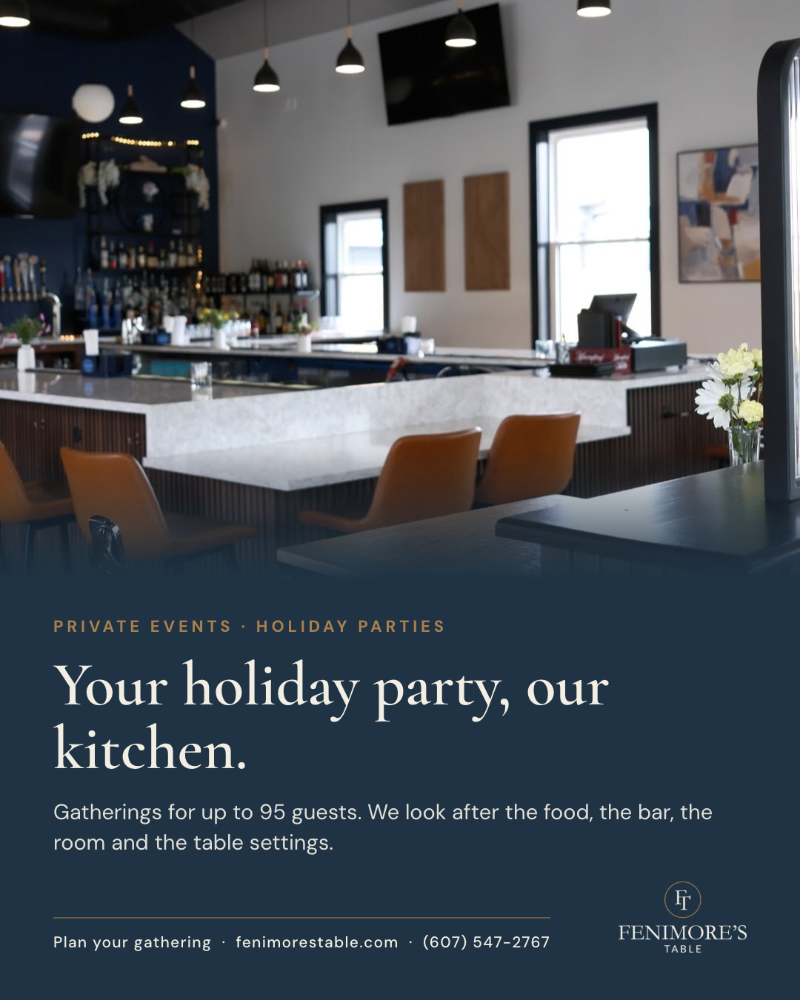
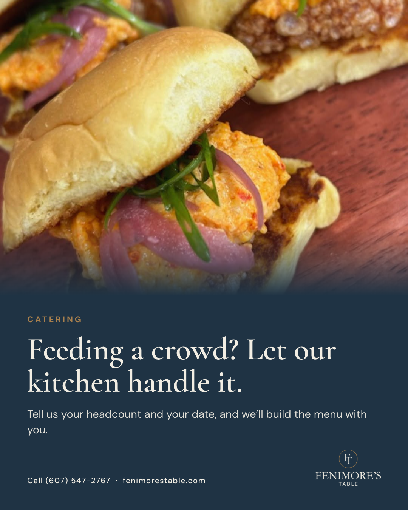

Five steps. Agree on what Fenimore's is and what we're selling. Line up the tools that sell it. Build the social calendar and graphics and review them together. Schedule everything in Meta so it publishes on its own. Then the people at the restaurant add same-day posts when it makes sense. Questions for the team are marked in yellow.
A neighborhood gastro-pub on Route 28, a few minutes outside the village and the Hall of Fame, with the Hampton Inn next door. Breakfast, lunch and dinner, a full bar, football on nine screens, and private events for up to 95.
What every post, email and story is working toward this winter. Review these first. If we agree on these seven, the calendar below follows from them.
Book the dining room for holiday parties, rehearsal dinners, showers, team dinners and reunions. One events post a week, plus the booking link in every football and holiday post.
Every inquiry goes through the Private Events form to Christine.
Make Fenimore's the place to watch in Cooperstown: every Bills game, plus the Steelers, Giants and Eagles, Monday and Thursday night games, and the big college Saturdays.
Game posts go out the morning of, with that day's special.
Office lunches, family gatherings and holiday hosting, cooked by the Fenimore's kitchen.
Needs: how catering is ordered, minimums, notice, pickup or delivery.
Breakfast from 7:30 (8 on weekends) is still the best-kept secret on Route 28. Lunch for workers and travelers. Dinner Thursday through Monday, led by Riggies Thursday, Fish Fry Friday and Prime Rib Saturday.
One plain, real-food post most days.
A clear, repeatable bar reason to come in, tied to game days and the dinner nights.
Needs: days, times and specials (see question below).
One gift card post a week from Black Friday, Nov 27, through Christmas Eve.
Needs: how gift cards are sold (in house, Toast online, both).
Find out whether Toast has already been collecting guest emails. If yes, start sending on Nov 5. If not, start collecting on Nov 1 and send once there are people to send to.
About two sends a month, on Thursdays.
Every initiative above should show up in all of these at the same time, so a guest sees the same message on the website, on Instagram, in their inbox, on the table and from the server.
| Tool | Where it stands | What we'll do |
|---|---|---|
| Website fenimorestable.com | Menu, breakfast, drinks, Private Events with the inquiry form to Christine, Toast ordering and reservations. | Fix the old 6:30 hours still showing on the Drinks page footer. Add happy hour and brunch once confirmed, holiday hours by Nov 10, and a catering page once details are set. |
| Social Facebook and Instagram | About 1.2K Facebook followers. Many recent posts used AI images. | Real photos only from Nov 1. Pre-schedule the calendar below a month ahead in Meta Business Suite; staff add same-day photos and stories. |
| Google Business Profile What people see when they search | The listing exists. | Holiday hours on every holiday, a weekly Google post that mirrors the main social post, and photo updates. |
| Email Owned list | No list we know of. Toast may already be collecting addresses. | Check Toast first. If there's a list, send about twice a month on Thursdays. If not, collect from Nov 1. |
| In-house signage and QR codes Table tents, register, front door | Not in place yet. | One table tent with this week's football, the three specials and a QR code to the Private Events page; a register card for gift cards and email sign-up. |
| TV screens Nine screens | Used for games. | When no game is on, run a loop of real food, drink, specials and events slides. |
| Staff training Everyone on the floor | Not in place yet. | A one-page card each month: hours, specials, this week's games, how to answer an events or catering question, gift cards, and what's on social this week. Five minutes at pre-shift. |
These block specific posts. Answers go straight into the calendar.
Two graphics ready for review, the weekly rhythm, then a proposed post for every day.


Built around the hours on the website: Mon 7:30 to 9, Tue and Wed 7:30 to 4, Thu and Fri 7:30 to 9, Sat and Sun 8 to 9.
| Day | Lead post |
|---|---|
| Monday | Monday Night Football, or an events/catering post |
| Tuesday | Lunch, office catering, corporate groups (closes at 4) |
| Wednesday | Breakfast, holiday party bookings (closes at 4) |
| Thursday | Chicken Riggies ($14.95) and Thursday Night Football |
| Friday | Fish Fry ($16.95) and happy hour (once confirmed) |
| Saturday | Prime Rib ($27.95) and college football |
| Sunday | NFL Sunday on nine screens, and brunch (if running) |
Every post uses a real photo of Fenimore's food, drinks, room or staff. No AI images.
| November 2026 | ||
| SunNov 1 | FootballBrunch | Game day: Bills vs Ravens at 1 on all nine screens. Sunday brunch before kickoff (if running). Clocks went back last night, so it's an extra hour of football. 🏈 Bills vs Ravens, 1pm 🏈 Steelers vs Browns, 1pm ✉ Email (if there's a list): Start collecting: QR on table tents and receipts, opt-in box on the Private Events form, and ask at the register. |
| MonNov 2 | BreakfastEvents / groups | Holiday party season starts now. Post the dining room with "Your holiday party, our kitchen" and the Private Events link. Up to 95 guests. |
| TueNov 3closes 4pm | LunchCatering | Tuesday lunch for workers on Route 28: a sandwich and soup photo. Mention catering for office lunches. |
| WedNov 4closes 4pm | Breakfast | Breakfast from 7:30. A plated breakfast photo, plain and real. "Most people driving past still don't know." |
| ThuNov 5 | DinnerFootballEvents / groups | Riggies Thursday ($14.95), plus Thursday Night Football on the screens. Story: holiday party dates are filling. ✉ Email (if there's a list): Send 1: Book your holiday party now (dates are filling). Football on 9 screens. Weekly specials. |
| FriNov 6 | DinnerHappy hour | Fish Fry Friday ($16.95). Happy hour post if confirmed. |
| SatNov 7 | DinnerFootball | Prime Rib Saturday ($27.95) and college football all day on nine screens. |
| SunNov 8 | FootballBrunch | NFL Sunday on nine screens. Wings and a pint photo. Brunch if running. 🏈 Giants at Eagles, 1pm |
| MonNov 9 | FootballDinner | Monday Night Football: Bills at Vikings, 8:15. Post at 3pm. See the night-game question. 🏈 Monday Night Football: Bills at Vikings, 8:15pm See question: night games and the 9pm close. |
| TueNov 10closes 4pm | LunchEvents / groups | Three ways to host: The Fenimore, The Signature, The Grand, plus the Celebration Brunch. Packages graphic. |
| WedNov 11closes 4pm | HolidayBreakfast | Veterans Day thank-you post in the morning, with an offer if there is one. Veterans Day. Anything for veterans: a free coffee, a discount, a thank-you only? |
| ThuNov 12 | DinnerFootball | Riggies Thursday and Thursday Night Football. 🏈 Thursday Night Football: Giants vs Commanders, 8:15pm |
| FriNov 13 | DinnerHappy hour | Fish Fry Friday. Happy hour if confirmed. |
| SatNov 14 | DinnerFootballEvents / groups | Prime Rib Saturday and college football. Story: rehearsal dinners and showers for spring 2027 (the Hampton Inn is next door). |
| SunNov 15 | Football | Bills at Jets, 1pm on nine screens. Game day post that morning. 🏈 Bills at Jets, 1pm 🏈 Sunday Night Football: Steelers at Bengals, 8:20pm |
| MonNov 16 | BreakfastCatering | Catering post: "Feeding a crowd? Let our kitchen handle it." (once catering details are confirmed). |
| TueNov 17closes 4pm | Lunch | Lunch feature: a panini or burger photo from the real menu. |
| WedNov 18closes 4pm | BreakfastHoliday | Thanksgiving week hours post (needs hours). Breakfast photo. |
| ThuNov 19 | DinnerFootball | Riggies Thursday and Thursday Night Football. Remind people Thanksgiving night is Bills vs Chiefs. ✉ Email (if there's a list): Send 2: Thanksgiving week hours, Bills vs Chiefs on Thanksgiving night, gift cards from Black Friday. |
| FriNov 20 | DinnerEvents / groups | Fish Fry Friday. Events post: team and office holiday dinners, December dates. |
| SatNov 21 | DinnerFootball | Prime Rib Saturday and college football. |
| SunNov 22 | Football | Bills vs Dolphins, 1pm. Game day post with the Sunday specials. 🏈 Bills vs Dolphins, 1pm 🏈 Steelers at Eagles, 4:25pm · Giants vs Jaguars, 1pm |
| MonNov 23 | FootballHoliday | Thanksgiving week: hours for Wed through Sun in one graphic. Monday Night Football tonight. |
| TueNov 24closes 4pm | CateringHoliday | Hosting Thanksgiving weekend guests? Catering or a breakfast carafe ($33) for the house. |
| WedNov 25closes 4pm | BreakfastHoliday | Thanksgiving Eve: breakfast and lunch today, closed at 4. Reminder for tomorrow's hours and the Bills game. |
| ThuNov 26 | HolidayFootball | Happy Thanksgiving. Morning thank-you post. 3pm post: Bills vs Chiefs at 8:20 (if open). Thanksgiving. Open on Thanksgiving? Hours? A Thanksgiving dinner, a to-go meal, or just the regular menu? And stay open for Bills vs Chiefs at 8:20? 🏈 Thanksgiving football all day, ending with Bills vs Chiefs, 8:20pm 🏈 Eagles at Cowboys, 4:30pm See question: night games and the 9pm close. |
| FriNov 27 | HolidayGift cardsFootball | Black Friday gift card launch. Afternoon post: Steelers vs Broncos at 3, on Prime Video and on the screens. Black Friday. Gift card offer? Regular hours? 🏈 Black Friday: Steelers vs Broncos, 3pm on Prime Video |
| SatNov 28 | HolidayGift cardsFootballDinner | Small Business Saturday: shop local, eat local. Prime Rib Saturday and rivalry Saturday football. Small Business Saturday. Anything special, or ride the gift card post? 🏈 Rivalry Saturday in college football |
| SunNov 29 | FootballBrunch | NFL Sunday on nine screens. No Bills game today (they played Thursday). 🏈 Giants at Colts, 1pm |
| MonNov 30 | Gift cardsFootball | Cyber Monday: gift cards online (if sold through Toast). Monday Night Football. |
| December 2026 | ||
| TueDec 1closes 4pm | HolidayLunch | Giving Tuesday post (if there's a tie-in). Lunch feature. Giving Tuesday. Any charity or community tie-in? (Fenimore's closes at 4 on Tuesdays.) |
| WedDec 2closes 4pm | BreakfastEvents / groups | Last call for December holiday party dates. Dining room photo and the booking link. |
| ThuDec 3 | DinnerFootballGift cards | Riggies Thursday and Thursday Night Football. Gift card story. ✉ Email (if there's a list): Send 3: Gift cards for everyone on your list. December football. Last call for holiday party dates. |
| FriDec 4 | DinnerHolidayHappy hour | Fish Fry Friday. Happy Hanukkah greeting at sundown. Hanukkah begins at sundown. Anything special, or a simple greeting? |
| SatDec 5 | DinnerFootball | Prime Rib Saturday and conference championship Saturday on nine screens. 🏈 College conference championship Saturday |
| SunDec 6 | Football | Bills at Patriots, 4:25. Game day post that morning. 🏈 Bills at Patriots, 4:25pm 🏈 Giants vs 49ers, 1pm · Eagles at Cardinals, 4:25pm · Sunday Night Football: Steelers vs Texans, 8:20pm |
| MonDec 7 | Gift cardsFootball | Gift cards: "for everyone on your list." Monday Night Football. |
| TueDec 8closes 4pm | LunchCatering | Office holiday lunches: catering post for teams that can't get away. |
| WedDec 9closes 4pm | BreakfastCooperstown | Breakfast post. Cooperstown holiday events this month (once dates are in). |
| ThuDec 10 | DinnerFootballEvents / groups | Riggies Thursday and Thursday Night Football. Events: January and February dates for groups. |
| FriDec 11 | DinnerHappy hour | Fish Fry Friday. Happy hour if confirmed. |
| SatDec 12 | DinnerFootball | Prime Rib Saturday and Army vs Navy. 🏈 Army vs Navy |
| SunDec 13 | Football | Sunday Night Football: Bills at Packers, 8:20. See the night-game question. 🏈 Sunday Night Football: Bills at Packers, 8:20pm 🏈 Eagles vs Colts, 1pm · Giants at Seahawks, 4:25pm See question: night games and the 9pm close. |
| MonDec 14 | Gift cardsFootball | Gift card post, week two of December. Monday Night Football. 🏈 Monday Night Football: Steelers at Jaguars, 8:15pm |
| TueDec 15closes 4pm | Lunch | Lunch feature. |
| WedDec 16closes 4pm | BreakfastHoliday | Christmas week hours post (needs hours). |
| ThuDec 17 | DinnerFootball | Riggies Thursday and Thursday Night Football. Saturday night is Bills vs Bears. ✉ Email (if there's a list): Send 4: Christmas week hours, last-minute gift cards, Bills vs Bears Saturday night. |
| FriDec 18 | DinnerFootball | Fish Fry Friday and the College Football Playoff first round at 8. 🏈 College Football Playoff first round, 8pm |
| SatDec 19 | DinnerFootball | Big one: college playoff games all day, then Bills vs Bears at 8:20. Prime Rib Saturday. 🏈 College Football Playoff tripleheader, then Bills vs Bears, 8:20pm 🏈 Eagles vs Seahawks, 5pm See question: night games and the 9pm close. |
| SunDec 20 | FootballBrunch | NFL Sunday on nine screens. Last weekend before Christmas: gift card story. 🏈 Steelers vs Ravens · Giants vs Browns, 1pm |
| MonDec 21 | Gift cardsFootball | Last-minute gift cards. Monday Night Football. |
| TueDec 22closes 4pm | CateringHoliday | Hosting family this week? Let Fenimore's cook (catering, once confirmed). |
| WedDec 23closes 4pm | BreakfastGift cards | Breakfast post. Last gift card push. |
| ThuDec 24 | Holiday | Christmas Eve hours and a warm thank-you post. Christmas Eve. Open? Hours? Anything special on the menu? 🏈 Christmas Eve: Eagles vs Texans, 8:15pm |
| FriDec 25 | HolidayFootball | Merry Christmas. If open: Bills at Broncos, 4:30 on Netflix. Christmas Day. Open or closed? If open, hours, and is the Bills game (4:30, Netflix) on the screens? 🏈 Bills at Broncos, 4:30pm on Netflix |
| SatDec 26 | DinnerFootball | Prime Rib Saturday. The week between: family in town, good food, football. |
| SunDec 27 | FootballEvents / groups | NFL Sunday. Post looking ahead: winter groups and events for January to March. |
| MonDec 28 | BreakfastFootball | Breakfast for the family still in town. Monday Night Football. 🏈 Monday Night Football: Giants at Lions, 8:15pm |
| TueDec 29closes 4pm | LunchHoliday | New Year's Eve plans post (needs details). Lunch feature. ✉ Email (if there's a list): Send 5: New Year's Eve at Fenimore's and New Year's Day breakfast. |
| WedDec 30closes 4pm | BreakfastFootball | Breakfast. College Football Playoff quarterfinal tonight. 🏈 College Football Playoff quarterfinal (Fiesta Bowl) |
| ThuDec 31 | HolidayDinner | New Year's Eve post (needs details). Thank-you for the year. New Year's Eve. A New Year's Eve dinner or party? Champagne toast? Stay open past 9? And New Year's Day hours? |
Bills dates are from the 2026 schedule released in May. Steelers, Giants and Eagles games are added from each team's 2026 schedule; Giants Sunday times assume the usual 1pm unless listed, and the Steelers vs Ravens time (Dec 20) isn't set. Re-check every kickoff time on the team's site the week of the game. College dates are confirmed for the playoff (Dec 18, 19 and 30). Rivalry Saturday, conference championships and Army vs Navy follow the usual pattern; confirm before posting.
Once the team signs off on the calendar and graphics, every post goes into Meta Business Suite with its photo, caption and link, scheduled for its date and time on Facebook and Instagram together. A post scheduled in November goes out on Christmas Eve whether or not anyone is near a phone.
The scheduled posts keep a steady rhythm. The people at Fenimore's make it feel alive: a full room on a Bills Sunday, a plate the kitchen is proud of, a party setup before guests arrive.